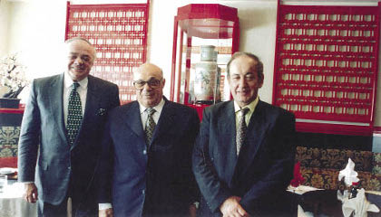

1997, Yeşilyurt Polat Oteli, Şarık Tara, Rauf Denktaş, Erol Manisalı
Benim açımdan Denktaş saygı duyduğum ve takdir ettiğim bir siyaset adamı olmanın yanında, samimi olarak fikirlerimi paylaştığım bir dost, bir aile büyüğü olarak göründü.
Bana bütün içtenliği ile her şeyi söylerdi, çekinmezdi, çünkü güveni vardı. İstismar etmeyeceğimden emindi. Onunla ben de çok rahat konuşurdum, düşüncelerimi hoşuna gitmese de açık açık söylerdim. Galiba bana sevgi ve yakınlığının esas nedeni buydu.
Rauf Denktaş’la yalnız KKTC ve Türkiye’de değil, Avrupa ülkelerinde de beraber olduk. Alman Prof. Werner Gumpel’in Denktaş için düzenlediği konferansta Münih’te beraberdik. Köln’de Türkiye-Avrupa toplantısında yine birlikteydik. 1980’li yılların sonunda İngiliz parlamentosunda milletvekili Andrew Faulds’un düzenlediği Londra toplantısında aynı kürsüyü paylaşıyorduk.
Bunlar çok güzel anılar ve etkinliklerdi. Yılanlıada’daki evinden uluslararası toplantılara kadar her boyutta beraberliğimiz oldu.
Türkiye’de de pek çok toplantıda ve televizyon programında beraberdik.
– Bir defasında HBB televizyonunda Rauf Denktaş, Bülent Ecevit, Mümtaz Soysal ve bendeniz birlikte program yaptık, çok güzeldi.
– Kanaltürk’te 2006 yılında Denktaş ile beraber bir programa çıktık, sanki kendisi benim konuğummuş gibi bir düzenleme oldu. Denktaş’ı o kadar sıkıştırdım ki Ankara’yı kızdırmamak için, onun söylemek istemediği kimi gerçekleri ağzından adeta kerpetenle çıkarttım ve söylettim. Programdan sonra bana söylediği şuydu: “Manisalı, bir dövmediğin kaldı.” Ancak onun gibi nüktedan bir insan bunu söyleyebilirdi. Onun mütevazı tutumu beni çok etkiledi.
Genellikle Politika Dışı
Denktaş’la bazı anılarımı içeren bu notlarda daha çok siyaset dışı gözlemlerimi ve izlenimlerimi kaleme aldım.
– Bu anılarda onun “alaycı” kimliği vardır. En ciddi ve dramatik bir olayda bile işi yumuşatacak, güldürecek, insanı düşündürecek bir nokta bulur.
Bir seferinde söylemişti; Makaryos ile yaptığı ikili görüşmelere başlamadan önce girizgâh yapılırken, hemen kameramı elime alıp onun birkaç poz resmini çeker ve havayı yumuşatırım; ilk zamanlar çok şaşırdı, sonraları buna alıştı. Hatta bir seferinde makineyi unutmuşum; “Ne o yoksa benimle ilgili düşüncelerini değiştiriyor musun,” dedi.
Denktaş’ın bunu bana aktarması aslında onun “muzip ve biraz da cingöz” kimliğinin tipik bir göstergesidir.
Denktaş kendi ifadesi ile “Makaryos gibi suratsız bir papazı bile yumuşatmanın yolu vardır” derdi. Denktaş, işte böyle bir kişiliğe sahiptir.
– Olağanüstü gözlemci bir insandır. Bu gözlemciliğini fotoğraf sanatına olan tutkusu ile ortaya koydu. Hatta bir profesyonel gibi birçok uluslararası sergi açtı.
– Denktaş çok duygusal bir insan, gözü çabuk sulanır, üzüldüğünde derin derin iç çeker. Bu duygusallığı onun şair yönünü de yansıtır. Yazılarını kimi zaman şiirlerle süslemeyi sever, kendi dizelerini araya sokuşturur.
– Rauf Denktaş inançlı bir insandır. Müslümanlığı önemser, saygı duyar, benimser ve inanır.
KKTC’nin tanıtımı için çaba gösterirken İslam dünyası ile bağlarını yoğunlaştırmıştı.
– Denktaş aynı zamanda uygar ve çağdaş değerlere çok önem veren bir kişiliğe sahiptir. İngiltere’de gördüğü hukuk eğitimi onu Batı’nın çağdaş değerleri ile bütünleştirmiştir.
Münih, 1987, Rauf Denktaş, Prof. Werner Gumpel, Erol Manisalı